在真实项目里重度用上几周 Coding Agent，很多工程师都会撞上同一种疲惫：代码写得越快，人花在“盯场子”上的精力反而越多。
这种累来自两头。一头在写代码时：每次开新窗口都像带刚入职的新人，漏交代一句老数据兼容、没盯紧它跑全量单测，出来的代码就敢直接交差，甚至自己给自己写上一句“测试已通过”。另一头在写完代码后：PR 数量翻了倍，谁来过第一道初审？主干合入撞出冲突谁来解？薄弱模块的边界单测谁来补？每件事单拎出来都不难，但件件都要人切窗口、去催、去兜底。
说到底，卡住团队的已经不是模型会不会写代码，而是缺少一套管住交付流程、能自动推进日常维护的工程体系。
这正是我们打造并开源 LoopForge 的出发点。底层真正动手写代码的，依然是你顺手的 CodeBuddy、Codex、Claude Code、Cursor CLI、OpenCode 等 10 种主流编程 CLI；LoopForge 负责在外面把工程秩序立起来。在它里面，把研发工作交给 AI 是一场由浅入深的“三级跳”：
- 先在「对话」里探路：把临时任务丢给首页的 Main Bot，按需拉起沙箱探索验证，先把做法跑顺。
- 再固化成「SOP」流水线：把验证靠谱的做法存成标准流程：定型、方案、编码、脚本硬校验、独立评审、人工验收环环相扣，同类需求不再走样。
- 最后挂上「定时任务」自转：把整理社区反馈、审 PR、解冲突、补单测交给后台时钟按节奏接力，用确定性的工程铁砧（Forge），锻造持续自演进的研发闭环（Loop）。
检验一套研发工具最诚实的办法，就是拿它维护自己。下面我们就以正在线上日夜维护 Tencent/LoopForge 仓库的真实配置为蓝本，分 10 个步骤带你从零搭起来。
部署与初始化
十分钟，从一台空服务器到能干活的工作台
1三行命令，私有化启动
研发工作台要挂载源码和仓库凭据，放在自己的服务器里最踏实。宿主机不需要预装 Go 或 Node.js，只要有 Git 和 Docker，克隆仓库后一条命令就能拉起整套服务：
git clone https://github.com/Tencent/LoopForge.git
cd LoopForge
./start.sh如果国内服务器拉取 ghcr.io 较慢，执行时加上镜像加速变量 MIRROR=ghcr.nju.edu.cn ./start.sh 即可。启动后浏览器打开 http://服务器IP:8090，第一个注册的账号自动成为平台管理员。
2认识工作台首页
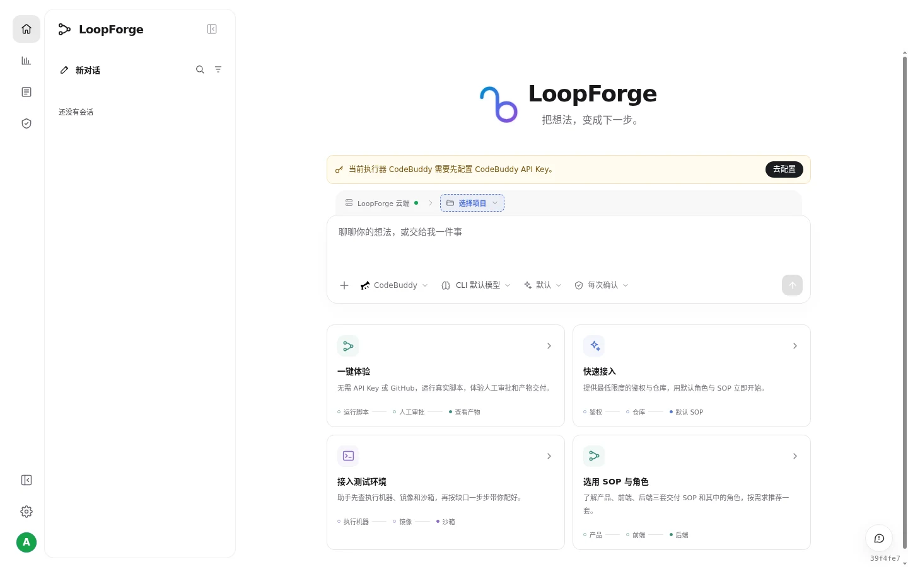
登录进来就是日常协作的主工作台：中间的输入框可以把探索任务直接交给 Main Bot，支持用 @ 随时唤起项目里的角色、技能、需求、SOP 或代码仓库；首次接入团队项目时，点下方的「快速接入」向导，跟着指引几步就能把鉴权凭据、代码仓库与默认流程配齐。
3按需配置干活的编程 CLI
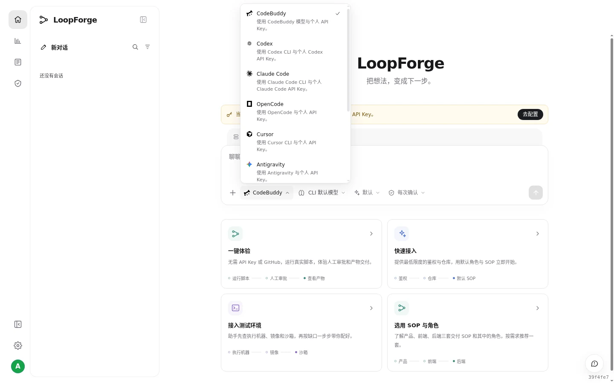
LoopForge 不绑定单一模型厂商。在设置里填好你顺手的编程 CLI 凭据（CodeBuddy、Codex、Claude Code、Cursor CLI、OpenCode 等），就能在对话、SOP 节点和定时任务里自由选用——同一条流水线，完全可以让擅长深度推理的模型做方案与评审，让响应快的模型负责日常编码。
接入仓库与沙箱
给 Agent 划定安全、一致的施工现场
4新建项目，挂载代码仓库
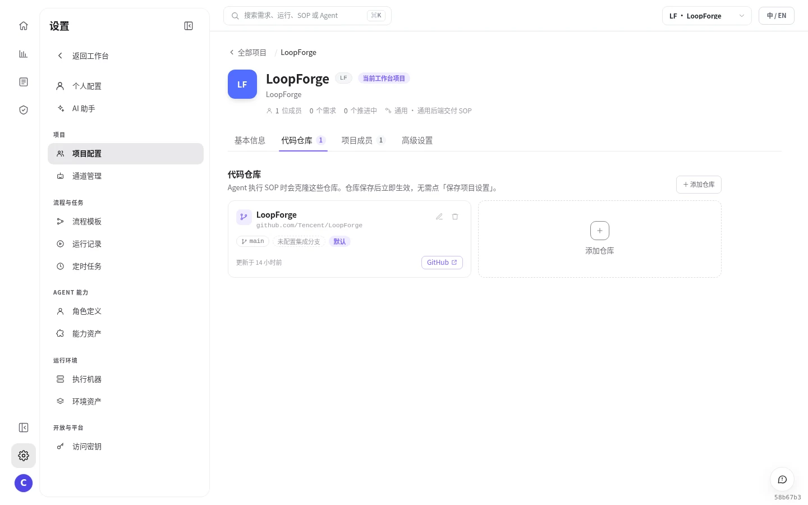
进入「设置 → 项目配置」创建项目，在「代码仓库」页接入你的 GitHub 仓库并指定默认分支（平台内置了 GitHub 设备码快捷授权，也支持通过 SSH 接入 GitLab、Gitea 等自建托管）。一个项目下可以同时挂载多个仓库，前后端分仓也能放在同一个项目里协同推进。
5配好隔离沙箱，告别“我本地是好的”
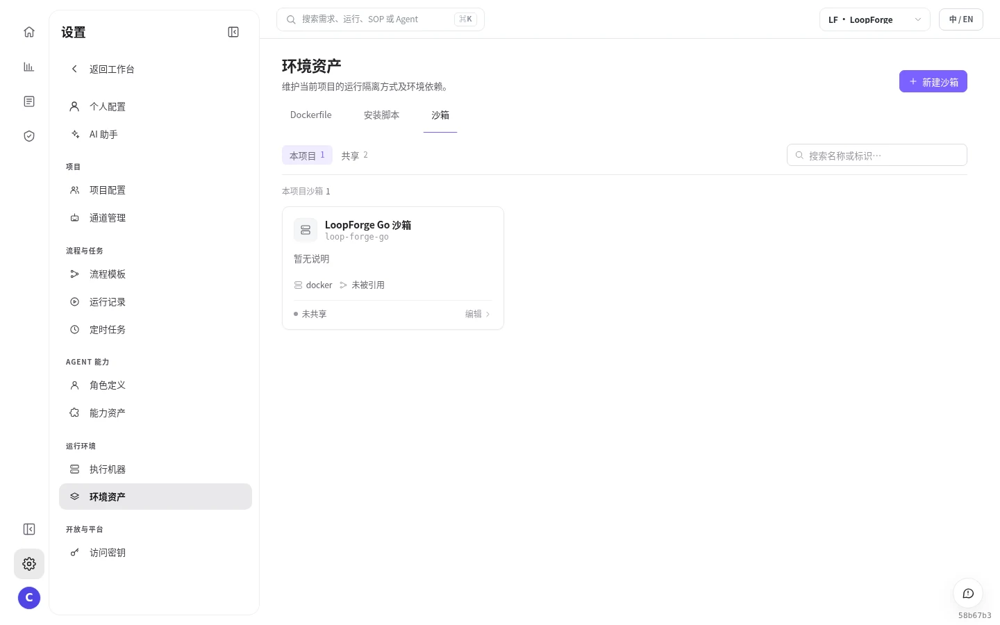
让 Agent 写代码跑测试，最忌讳直接污染宿主机，或者因为缺依赖卡在半路。在 LoopForge 里，所有任务都在隔离的 Docker 沙箱里执行，绝不触碰宿主机环境。 你只需要在「环境资产」里用一份 Dockerfile 把项目的编译工具链写清楚：
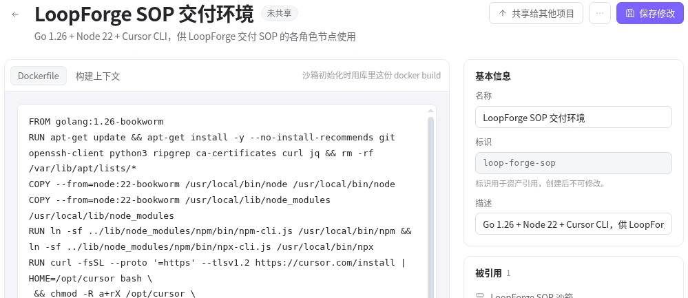
镜像构建好之后，无论是白天谁触发的 SOP，还是凌晨两点准时醒来的定时任务，全都跑在分毫不差的同一个容器环境里，彻底杜绝环境不一致带来的玄学报错。
跑通交付 SOP
把“聊一次改一次”变成带硬门禁的流水线
6选一套标准交付 SOP
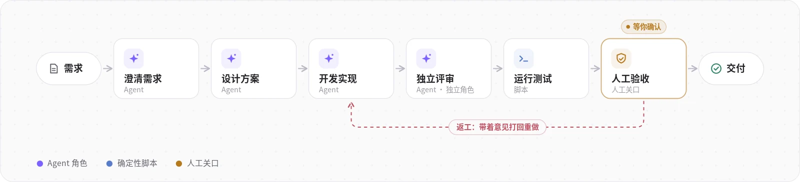
平台内置了后端交付、前端交付、产品方案、缺陷修复等开箱即用的 SOP 蓝图，复制到项目后就能在可视化画布上自由增删。整条流水线由三类核心节点咬合而成：Agent 节点负责思考、设计与改代码；脚本节点负责跑确定性的编译测试命令；人工关口在关键节点暂停，等你核对证据后拍板。任何一步没过关，都会带着具体问题自动打回上游节点返工。
7拆开角色职责，杜绝“自己审自己”
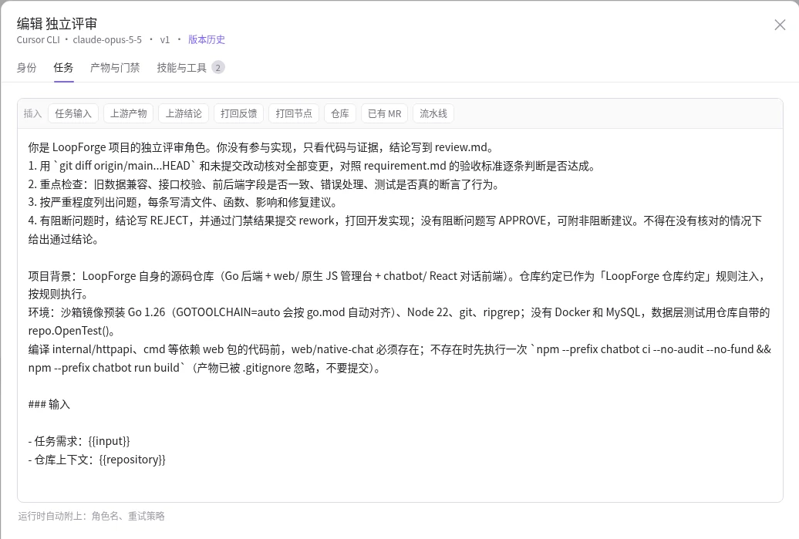
在同一个聊天框里让刚写完代码的 Agent 顺手自检，它大概率会顺着刚才的惯性告诉你“没问题”。而在 SOP 里，需求定型、方案设计、开发实现、独立评审分别由独立的角色担任，还能统一挂载仓库根目录的编码规范（如 AGENTS.md）。比如「独立评审」角色全程没有参与代码编写，没有任何包袱，只对着 git diff 和验收标准逐条挑刺，发现阻断隐患直接打回开发重做。
写角色提示词有个屡试不爽的窍门：平时你在聊天框里每次都忍不住重复叮嘱 Agent 的那句话，就是最该写进角色规矩里的红线。
8提需求，一键点「触发」
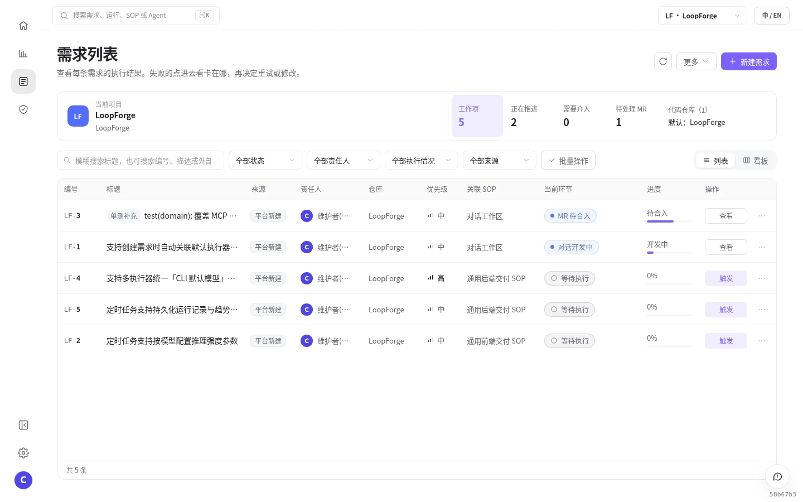
把要做的事项建进需求列表（也可以交由后面的“自动调研”任务自动生成），选好关联的交付 SOP，点下右侧的「触发」，流水线就开始在后台自主闯关。推进过程中不用人守着屏幕，随时回列表就能看到它走到了哪一步、产出了哪个待合入的 PR。
9盯紧“0 Token 脚本校验”，凭实证放行
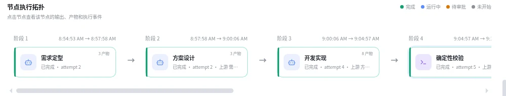
点进任意一次运行记录，每个节点的输出日志、工具调用轨迹与阶段文档都留得清清楚楚。其中最硬核的一环，是紧跟在编码后面的脚本校验节点：
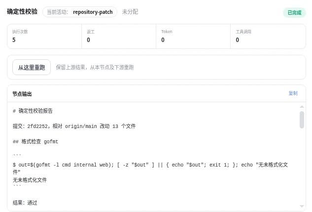
这一步消耗的 Token 是 0——代码到底过没过关，只认命令退出码是不是 0，绝不听模型自己汇报“我测过了”。就拿我们实跑“定时任务支持按模型配置推理强度”这条需求来说：上游角色先梳理出老数据兼容要求与 16 条验收标准，开发节点在独立分支改完 13 个文件后，脚本节点当场跑通格式检查、全量编译、静态检查、后端单测与前端 189 项测试，随后才流向独立评审与人工验收。万一中途某一步需要调整，点「从这里重跑」就能保留上游设计成果，只重跑当前及后续节点。
挂上 AI 定时任务
错峰接力，让仓库 24 小时自己演进
单次需求能稳稳交付之后，下一步就是把那些“每天都要干、但极度切割注意力”的日常维护活交给后台时钟。
10新建定时任务，配齐五环自举闭环
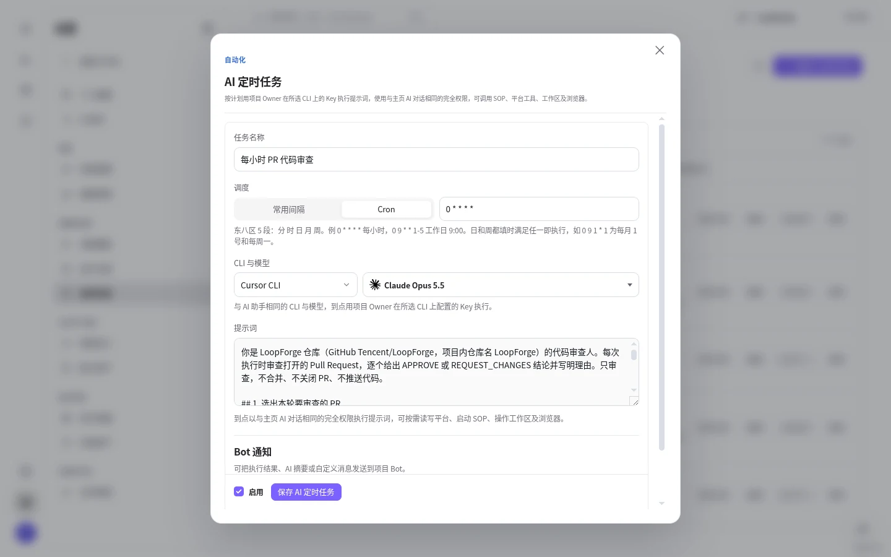
在「设置 → 定时任务」点击「新建 AI 定时任务」，配置非常直观：任务名称、运行频率（常用间隔或 Cron 表达式）、选用的 CLI 与模型、以及任务提示词。被定时唤醒的 Agent 拥有与主工作台完全一致的权限——能读写 GitHub、拉起沙箱跑测试、用浏览器查资料，也能往平台需求池提单，跑完还能把摘要推给群 Bot。
在维护 LoopForge 自身仓库时，我们在线上挂了五个错峰接力的定时任务：
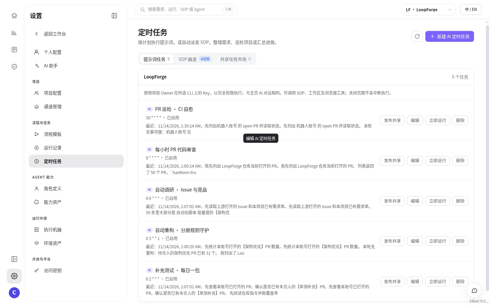
| 任务名称 | 运行节奏 | 核心职责 |
|---|---|---|
| 自动调研 | 每天 09:00 | 给社区 Issue 去噪归类，追踪同类工具动态，落成源码级需求单 |
| PR 审查 | 每小时整点 | 逐个过初审，核对边界逻辑与测试断言，给出明确结论与理由 |
| CI 巡检 | 每小时半点 | 紧盯自动化分支的冲突与失败用例，进沙箱合入 main 并自愈修复 |
| 补充测试 | 每天 02:00 | 挑一个低覆盖核心包补齐表驱动单测，严禁触碰生产代码 |
| 架构守护 | 每周一 03:00 | 对照 AGENTS.md 扫描跨层违规并小步重构，队列满额自动熔断 |
这五个任务的运行时间刻意做了咬合排班：凌晨 2 点自动提上来的单测 PR，整点过完代码初审，半点完成冲突与 CI 巡检；早上 9 点又把最新的社区反馈整理进需求池。等维护者早上推门坐到工位前，桌上摆着的已经是初审完备、测试全绿的“准合入” PR——人的精力只留给两处拍板：早上定做哪个需求，验收定合哪个 PR。
想让后台任务长期跑还不添乱，秘诀全在提示词里怎么“立规矩”。下面看看这五个任务的真实运行记录与防坑设计（完整 Prompt 均附在文末）：
① 自动调研：只读去噪，落成需求单每天 09:00
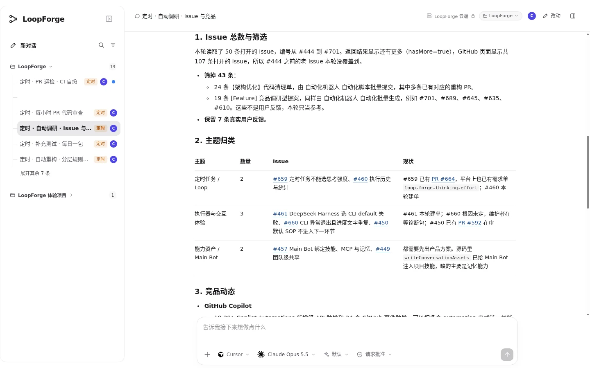
调研任务提示词的第一行就焊死了红线：对 GitHub 保持严格只读，绝不在公开仓库乱发评论或乱建 Issue 制造噪音，所有结论统一写进 LoopForge 的需求池。它会同步查阅同类工具的近期演进，并打开源码工作区核实现状，把模糊诉求落成指明具体包名、结构体与验收标准的待办单，做与不做完全由维护者定夺：
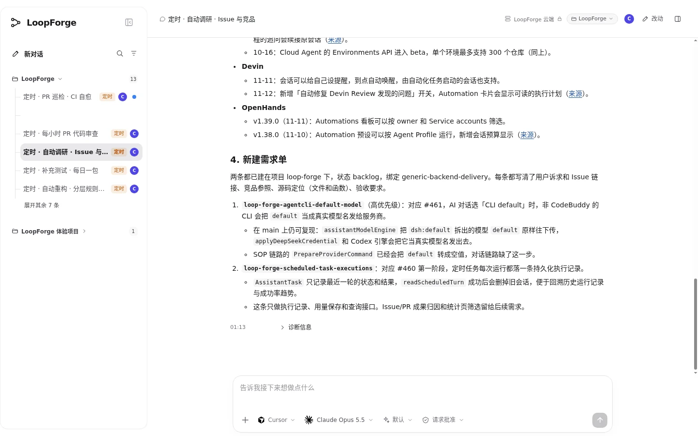
② PR 审查：拒收敷衍的 LGTM每小时整点
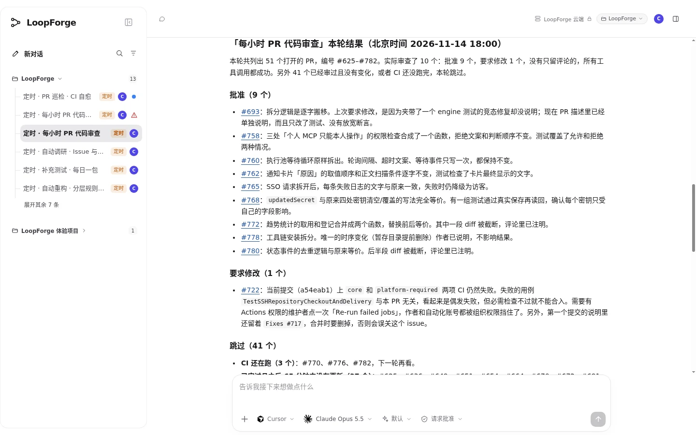
它替维护者把最费眼力的初审活干在前面：重点抓“号称纯重构却暗改了边界条件”“超出关联需求范围”“新增逻辑没写有效断言”等隐患。为了杜绝形式主义和评论轰炸，规矩立得很死：严禁只回一句 LGTM，哪怕给通过也必须用两三句话交代核验了哪些核心函数与单测；已审过且没有新提交的 PR 直接跳过。它只负责给结论，合入按钮永远留给人按。
③ CI 巡检：只修自动化自己的分支每小时半点
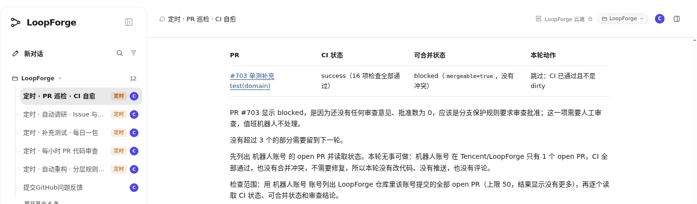
主干分支全天都在合入代码，在途 PR 很容易撞上冲突或红叉。半点唤醒的巡检助手会自动检出分支、合入最新 main 解掉冲突并重跑测试。安全边界同样锁死两条：只允许处理自动化账号自己提的 PR，人类同事的分支一行不碰；风平浪静时只在工作台留一张巡检表，绝不去 GitHub 刷存在感。
④ 每日补单测：生产代码一行不改每天 02:00
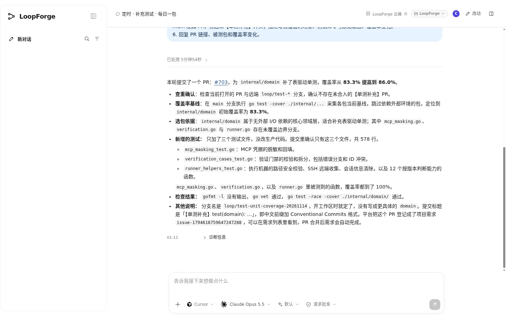
让 AI 补测试最怕踩一个坑——测试跑不过时，它反手把原本正确的业务代码改了去迁就断言。因此提示词里立下死规矩：先查重防堆积，只准新建测试文件，严禁改动任何一行生产代码（若发现疑似业务缺陷，只准记在 PR 描述里交给人看）。上面这次凌晨运行中，它挑中核心领域层薄弱模块，一口气补齐 3 个测试文件并通过 -race 竞态检测，稳稳把覆盖率从 83.3% 抬升到 86.0%。
⑤ 架构守护：队列满额就主动熔断每周一 03:00
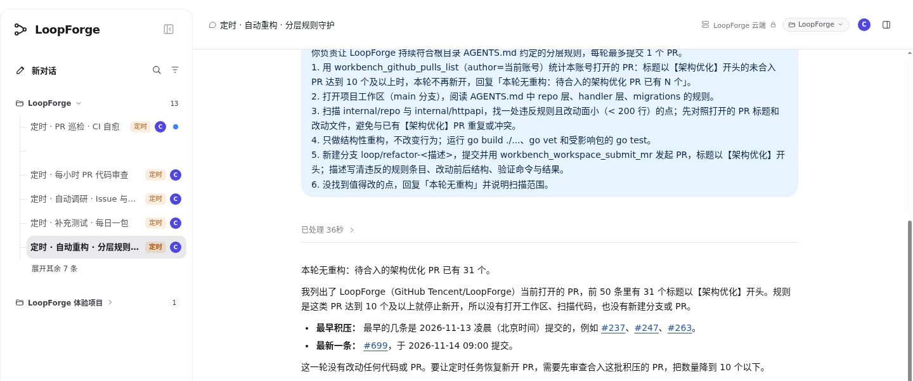
架构守护负责对照 AGENTS.md 扫描跨层调用，每次做 200 行以内的纯结构微调。实战里我们很快发现：自动重构千万不能贪多——如果待审队列里已经积压了一批重构单，后台还闷头继续提，只会把团队的评审队列彻底堵死。所以我们给它装上了水位上限：动手前先数未合入的【架构优化】PR，满 10 个立刻停手退出，连沙箱都不拉起。
六条落地经验
用确定的工程规矩，兜住概率性的大模型
- 先在对话里跑顺，再固化成 SOP别一上来就画庞大的流程图。先跟 Main Bot 对话做几单，把路蹚通了再沉淀成标准模板，事半功倍。
- 单一职责，一个任务只干一件事调研、初审、解冲突、补单测、守架构各司其职。上下文越纯粹，模型越不容易跑偏，出了问题也秒级定位。
- 不可逆红线焊在提示词第一行不合入、不关单、不直推 main、不碰同事分支。把高危动作关进笼子，后台任务跑通宵人才能睡得踏实。
- 动手前先查重、先看队列水位没有刹车的定时任务只会沦为噪音制造机。每次唤醒先看在途分支与待审积压，超水位立刻安静退场。
- 客观对错交给脚本，别问模型格式、编译、单测到底过没过，只认命令退出码是不是 0，把确定性门禁交给 0 Token 的脚本节点。
- 把人的精力留给真正的拍板做哪个需求、合哪个 PR 永远由人拍板；但人点按钮的那一刻，源码定位、测试实证与初审报告应该已经整整齐齐摆在手边。
AI 编程走到今天，真正拉开团队效率差距的，早已不是谁单次生成代码更快，而是谁能把散落在个人脑子里的工程好习惯，沉淀成仓库里 24 小时不停歇的运转秩序。
立即上手试试
LoopForge 已基于 MIT 协议正式开源，Docker 三行命令即可私有化部署，支持 10 种主流编程 CLI。下面附录整理了文中全部 5 个定时任务的完整参考 Prompt，复制过去换成你自己的仓库就能直接跑起来。如果这篇教程和 LoopForge 对你有启发，欢迎去 GitHub 点亮一颗 Star 支持我们！
附录：五个定时任务的完整 Prompt
硬性约束： - 对 GitHub 保持只读，不发评论、不建 Issue、不提 PR；结果统一落到 LoopForge 平台的需求列表。 你负责每天整理社区反馈与行业动态，把高价值事项转成可执行的需求单： 1. 读取仓库最新打开的 Issue，过滤批量生成的清理单，保留真实用户反馈，按模块归类，并核对是否已有 PR 在推进。 2. 用浏览器查阅主流编程 Agent 与研发自动化工具近期的更新（聚焦后台任务、流程编排与 PR 协作），提炼可借鉴点并附来源。 3. 打开项目工作区，核对高频诉求应落在哪个模块、涉及哪些结构体与函数。 4. 查重后挑选最多 3 条创建为待办需求，绑定通用后端交付 SOP，写明背景、关联 Issue、源码定位与验收标准。
你是当前项目仓库的代码审查人。每次执行时审查打开的 PR，逐个给出 APPROVE、REQUEST_CHANGES 或 COMMENT 结论并写明理由。只审查，不合并、不关闭、不推送。 一、选出本轮待审 PR - 跳过草稿和 CI 仍在运行的 PR，留到下一轮； - 已审过且没有新提交的 PR 自动跳过，避免重复刷屏； - 每轮最多深度审查 15 个，按编号从小到大处理。 二、逐个深度审查 1. 读取 PR 描述、改动规模、CI 结果与完整 diff；有关联 Issue 的同时核对范围是否一致。 2. 出现以下任一情况即 REQUEST_CHANGES： - 改动超出关联 Issue 范围且无合理说明； - 声称“纯重构行为不变”，实际改变了判断条件、错误文案或边界行为； - 存在空指针、资源泄漏、并发竞态、越权或密钥硬编码等隐患； - 新增逻辑缺少单测，或测试没有有效断言； - CI 失败，或与 main 存在冲突。 3. APPROVE 需用 2~4 句话写明核对了哪些关键逻辑与测试，严禁只写 LGTM；REQUEST_CHANGES 逐条写清文件、函数、原因与建议。 三、输出汇总 用中文列出本轮批准、要求修改和跳过的 PR 及原因。
硬性约束： - 只处理当前自动化账号自己提交的 Open PR，绝不修改其他协作者的分支。 - 不合并、不关闭任何 PR，不直接向 main 推送。 - 没有需要处理的问题时，直接回复「本轮无事可做」并附上巡检表。 你是仓库的 PR 值班助手，每轮最多修复 3 个 PR： 1. 列出本账号所有打开的 PR，逐个读取 CI 状态与可合并状态。 2. 草稿、CI 运行中、以及 CI 全部通过且无冲突的 PR 直接跳过。 3. CI 失败：检出分支，结合日志在沙箱内复现并修复；若失败与本分支改动无关，只在评论里说明，不强行改代码。 4. 与 main 冲突：合入最新 origin/main 解决冲突，跑通受影响包的 build、vet 与 test。 5. 推送修复后在 PR 下说明原因、修改点与验证结果，最后输出巡检状态表。
硬性约束： - 只操作当前项目绑定的默认仓库，不合并、不关闭任何 PR，不直接向 main 推送。 - 动手前先查重；如果已有未合入的【单测补充】PR，本轮直接回复「本轮无事可做」并附上链接。 - 打开工作区时使用项目预设的 Go 编译沙箱。 你负责持续提高代码库的单元测试覆盖率，每轮最多提交 1 个 PR： 1. 查看当前打开的 PR 与远端分支，确认没有正在等待合入的【单测补充】PR。 2. 打开 main 分支工作区，运行 go test -cover ./internal/... 记录各包覆盖率基线。 3. 在 internal/ 下挑选一个逻辑纯粹（不依赖外部数据库、容器或网络）且覆盖率偏低的模块，按仓库现有风格补充表驱动单测，重点覆盖边界条件与错误分支。只新增测试文件，严禁修改生产代码。 4. 依次运行 gofmt -l、go vet 和 go test -race -cover 确认全部通过，记录覆盖率前后变化。 5. 新建分支 loop/test-<简短描述>，按 Conventional Commits 规范提交并发起 PR，标题以【单测补充】开头；PR 描述写明覆盖场景、验证命令与覆盖率变化。
硬性约束： - 只操作当前项目默认仓库，不合并、不关闭任何 PR，不直接向 main 推送。 - 动手前先看队列积压与已有 PR，避免重复和制造审查拥堵。 你负责守护仓库 AGENTS.md 中约定的架构分层规范，每轮最多提交 1 个小步重构 PR： 1. 统计打开的 PR：标题以【架构优化】开头的未合入 PR 达到 10 个及以上时，本轮不再新开，回复「本轮无重构：待合入的架构优化 PR 已有 N 个」。 2. 打开 main 分支工作区，阅读 AGENTS.md 中的分层规则。 3. 扫描核心后端目录，找一处违反约定且改动面可控（少于 200 行）的位置，并确认没有 Open PR 在改同一批文件。 4. 做纯结构性调整，保持外部行为不变；build、vet 与相关单测通过后提交【架构优化】PR。 5. 没发现需要调整的地方，就回复「本轮无重构」并说明扫描范围。